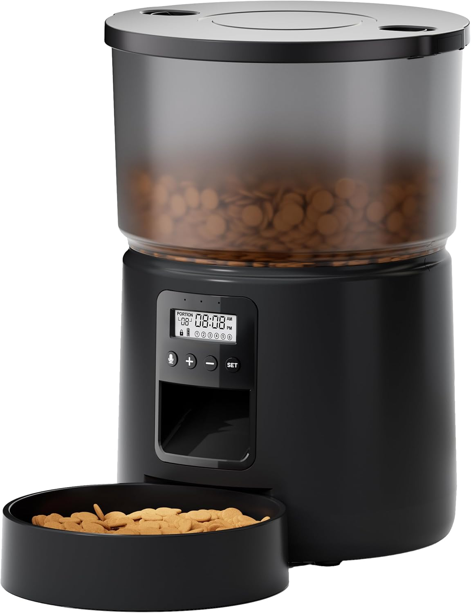
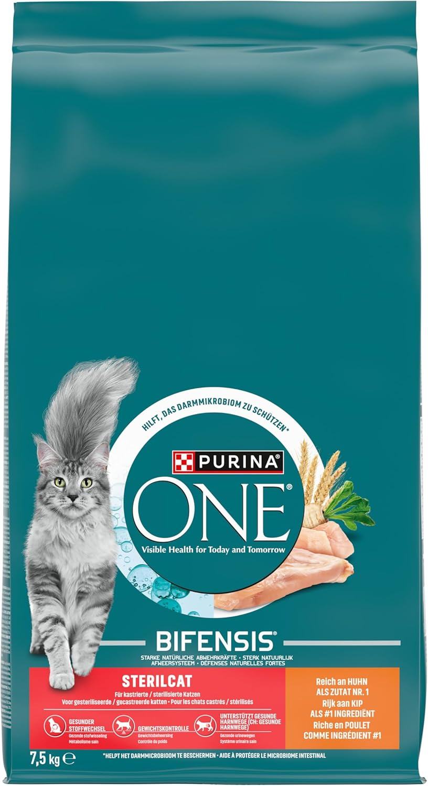
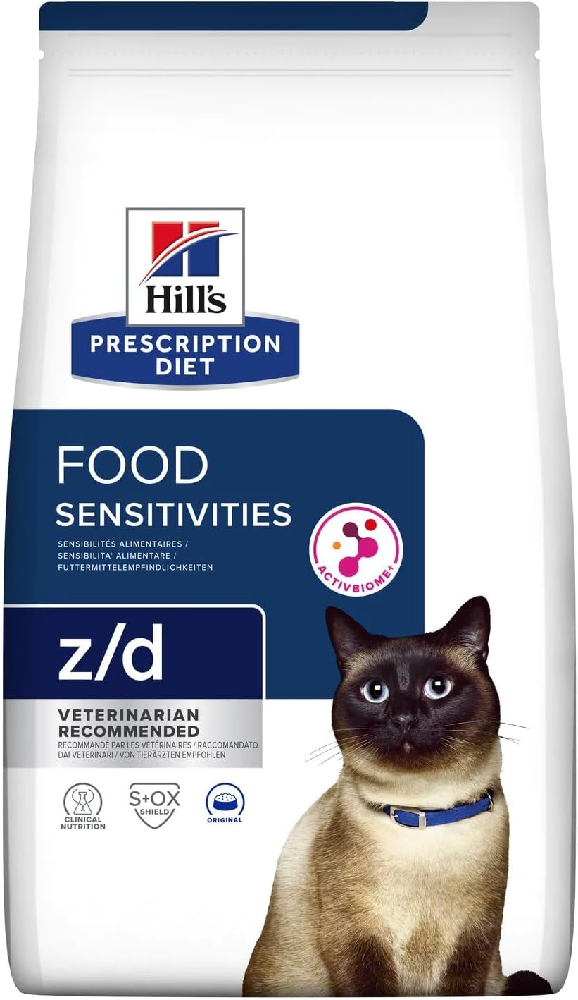

Los gatos son animales de costumbres con un sistema digestivo diseñado para hacer varias comidas pequeñas a lo largo del día — en la naturaleza, cazan hasta 15 presas pequeñas diarias y las van ingiriendo poco a poco. Darle al gato una sola comida grande al día va en contra de su biología y puede causar ansiedad, vómitos y problemas digestivos.
Pero la frecuencia ideal no es la misma para un cachorro de 2 meses que para un gato adulto de 5 años o un senior de 10. Aquí tienes la guía completa.
Frecuencia de alimentación por edad
La regla de oro: divide siempre la ración diaria recomendada en el envase del pienso entre el número de tomas. Nunca la dupliques — la cantidad total al día no varía, solo el número de veces que la sirves.
Raciones exactas por peso y edad
Estas son las cantidades orientativas para pienso seco. Siempre consulta la etiqueta de tu marca específica ya que la densidad calórica varía entre productos.
| Peso del gato | Cachorro (hasta 12m) | Adulto (1-7 años) | Senior (+7 años) |
|---|---|---|---|
| 2 kg | 40-50 g/día | 30-40 g/día | 25-35 g/día |
| 3 kg | 55-70 g/día | 40-55 g/día | 35-45 g/día |
| 4 kg | 70-85 g/día | 45-65 g/día | 40-55 g/día |
| 5 kg | 85-100 g/día | 55-75 g/día | 50-65 g/día |
| 6+ kg | Consultar vet | 11 g/kg de peso | Consultar vet |
Para comida húmeda, un gato adulto de 4-5 kg necesita aproximadamente 150-200 g al día. En alimentación mixta (seco + húmedo), reduce ambas cantidades proporcionalmente — si das 100 g de húmedo, baja el seco a 25-30 g.
Gatos esterilizados: tienen un metabolismo entre un 20-30% más lento. Reduce la ración indicada en el envase o usa un pienso específico para esterilizados — tienen menos calorías por ración para evitar el sobrepeso.
¿Húmedo, seco o mixto?
Esta es una de las preguntas más frecuentes y la respuesta no es única — depende de tu gato y tu rutina.
Pienso seco
Más cómodo, más económico y mejor para la salud dental. Puedes dejarlo en el comedero más tiempo sin que se estropee. El gran inconveniente es que los gatos beben menos agua cuando comen seco, lo que puede aumentar el riesgo de problemas renales y urinarios. Solución: un bebedero de agua corriente — los gatos prefieren el agua en movimiento y beben hasta un 70% más.
Comida húmeda
Mayor contenido en agua (70-80%), más parecida a la dieta natural del gato. Ideal para gatos con tendencia a problemas renales, poco bebedores o que necesitan perder peso. El inconveniente es que se estropea rápido una vez abierta — no puede estar más de 2 horas fuera del frigorífico en verano.
Alimentación mixta
La opción más recomendada por veterinarios: pienso seco por la mañana (cuando no estás) y comida húmeda por la noche (cuando puedes controlar). Combina lo mejor de los dos mundos — comodidad + hidratación.
Horarios ideales — cuándo dar de comer
Los gatos son animales de rutina y el estrés por horarios irregulares es real. Una vez establecido el horario, mantenerlo es tan importante como la cantidad.
- 2 tomas diarias: mañana al levantarte y noche al volver a casa. Deja entre 8 y 12 horas entre tomas. Es el mínimo aceptable para un adulto.
- 3 tomas diarias (ideal): mañana, tarde y noche. Imita el comportamiento natural de caza — varias presas pequeñas durante el día.
- Barra libre: solo válida para gatos con peso saludable que se autorregulan bien. No funciona con gatos glotones ni en casas con varios gatos.
Nunca más de 12 horas sin comer: a diferencia de los perros, los gatos no toleran bien el ayuno prolongado. Más de 24-48 horas sin comer puede provocar lipidosis hepática (hígado graso), una enfermedad grave y potencialmente mortal.
Comederos automáticos — la solución si trabajas fuera
Si pasas muchas horas fuera de casa, un comedero automático programable es la solución más práctica para mantener el horario de tu gato sin depender de estar en casa.


